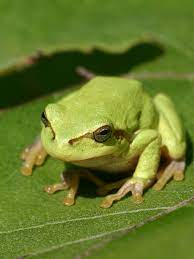
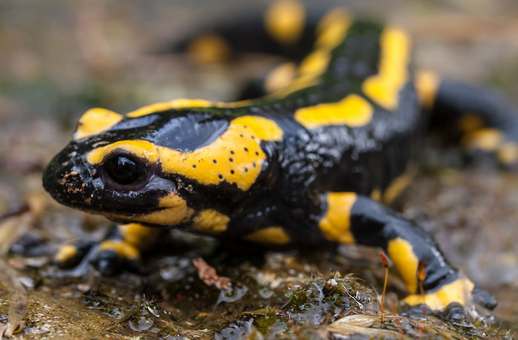
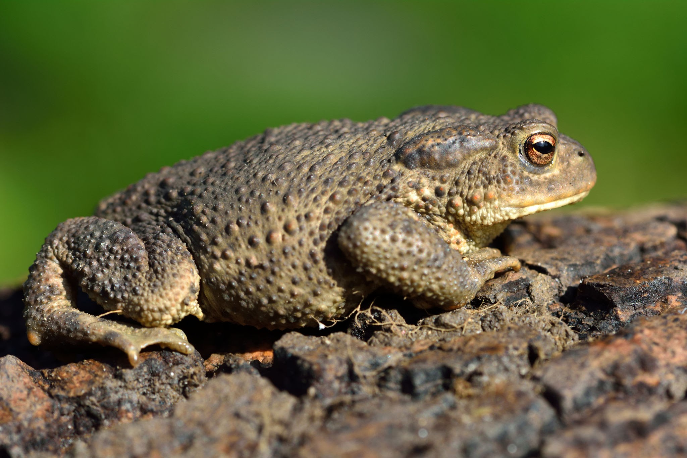
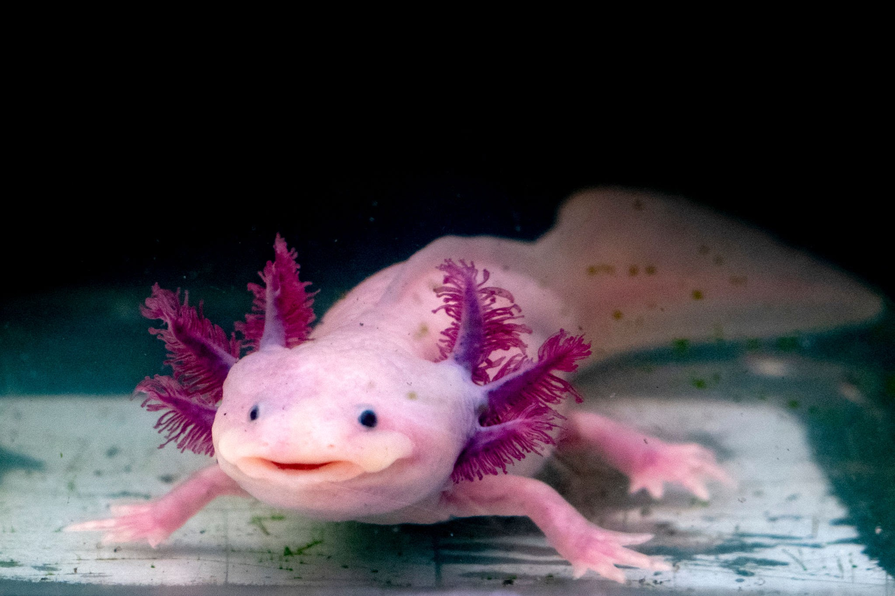

Caracteristicas:

Habitat: es una especie de anfibio que se encuentra principalmente en Europa. Su hábitat natural varía según la subespecie y la región específica, pero generalmente prefieren áreas boscosas y húmedas, como bosques de coníferas, bosques mixtos y bosques caducifolios. Estas salamandras tienden a habitar en lugares con una buena cobertura vegetal, como debajo de troncos, rocas, hojas caídas o en madrigueras abandonadas. Además, necesitan estar cerca de fuentes de agua, como arroyos, riachuelos o estanques, ya que pasan gran parte de su vida en un ambiente acuático. Es importante destacar que la salamandra de fuego es una especie protegida en muchas áreas debido a la pérdida de su hábitat natural y a las amenazas como la contaminación y la destrucción del medio ambiente. Por lo tanto, es crucial conservar y proteger sus hábitats para garantizar la supervivencia de esta especie.
Caracteristicas:

Habitat:El sapo común (Bufo bufo) es una especie de anfibio que se encuentra ampliamente distribuida en Europa, desde el sur de España hasta el norte de Escandinavia. Su hábitat natural también varía, pero generalmente se encuentra en una variedad de entornos terrestres y acuáticos. Estos sapos suelen habitar en áreas boscosas, praderas, tierras de cultivo, jardines y otras zonas con vegetación densa. Durante la temporada de apareamiento, se dirigen hacia cuerpos de agua como estanques, charcas, arroyos y lagos para reproducirse. Pasan gran parte de su vida en tierra firme, escondiéndose debajo de rocas, troncos caídos, hojarasca o en madrigueras excavadas por ellos mismos o abandonadas por otros animales. Al igual que con la salamandra de fuego, la conservación del hábitat del sapo común es fundamental para su supervivencia. La degradación del medio ambiente, la pérdida de hábitat y la contaminación son amenazas significativas para esta especie, por lo que es importante tomar medidas para proteger y preservar sus entornos naturales.

Habitat:
Caracteristicas: es un anfibio endémico de México, específicamente de los lagos de Xochimilco y Chalco, así como de algunas otras áreas cercanas de la Ciudad de México. Su hábitat natural está principalmente en cuerpos de agua dulce, como lagos, lagunas y canales, donde se encuentran entre la vegetación acuática. Aunque son capaces de vivir en el agua durante toda su vida, también pueden habitar en tierra firme en algunas etapas de su desarrollo, especialmente durante su fase metamórfica. Durante esta etapa, el ajolote respira aire y se aventura en áreas cercanas a los cuerpos de agua. Debido a la pérdida de hábitat, la contaminación del agua y la introducción de especies invasoras, el ajolote se encuentra en peligro crítico de extinción en su medio natural. La conservación de los hábitats acuáticos y la regulación de las actividades humanas en estas áreas son cruciales para la supervivencia de esta especie icónica de México.
Habitat: La rana venenosa dorada, también conocida como rana dorada o rana flecha dorada (Phyllobates terribilis), es una especie de anfibio que se encuentra en la región de la selva tropical del Pacífico del oeste de Colombia. Es conocida por ser una de las ranas más venenosas del mundo. Estas ranas son muy coloridas, con tonos de amarillo dorado brillante que les dan su nombre común. Su veneno es extremadamente potente y puede ser mortal para los depredadores y, potencialmente, para los humanos si se ingiere o se absorbe a través de la piel. Este veneno es utilizado por las tribus indígenas del área para embeber las puntas de flechas, de ahí su nombre común "rana flecha. El habitat natural de la rana venenosa dorada son las selvas tropicales húmedas y montañosas, donde habitan principalmente en el suelo del bosque y en las hojas caídas. A pesar de su toxicidad, estas ranas enfrentan amenazas debido a la pérdida de hábitat y al comercio ilegal de mascotas exóticas. Como resultado, están clasificadas como una especie en peligro de extinción y están protegidas por leyes tanto nacionales como internacionales.
Caracteristicas: Lagos y canales de agua dulce en México, especialmente en el Lago Xochimilco